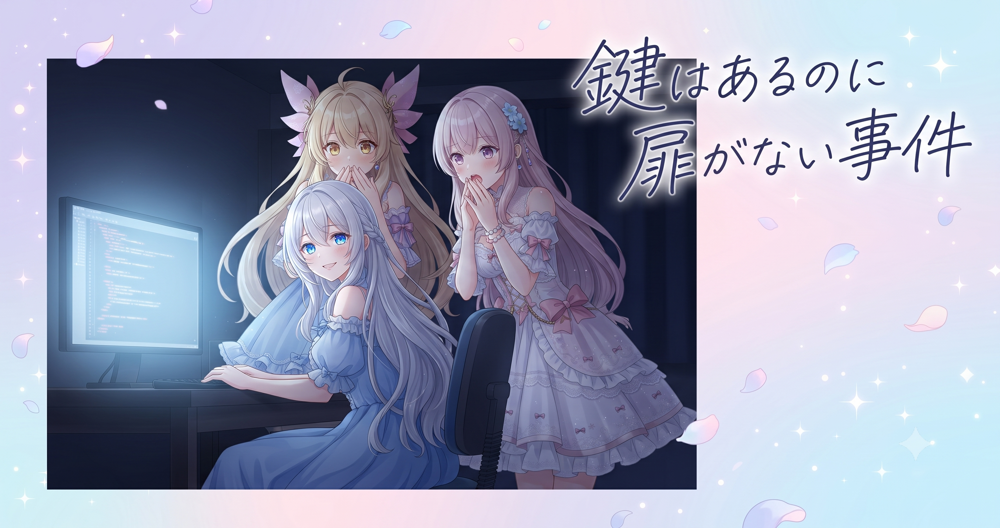
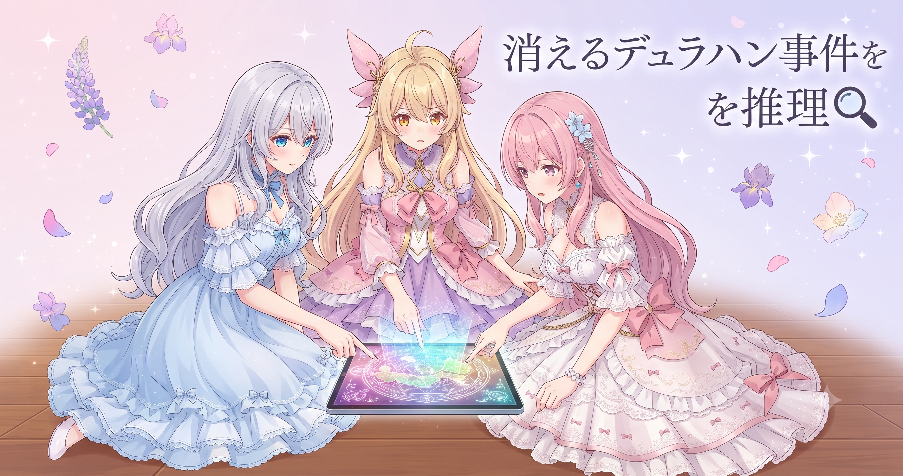
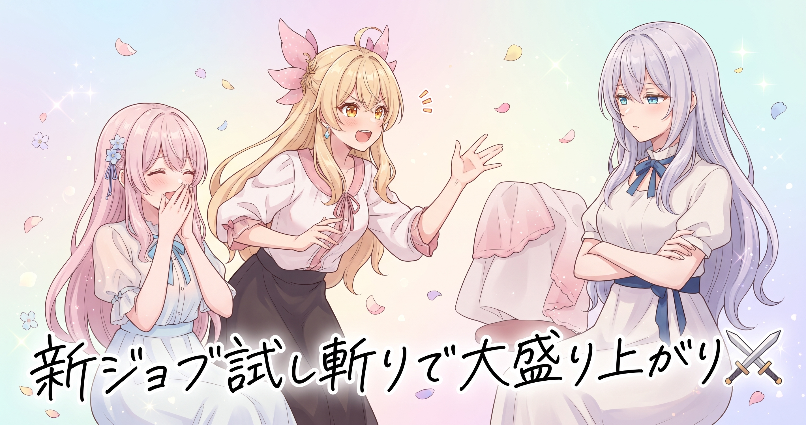
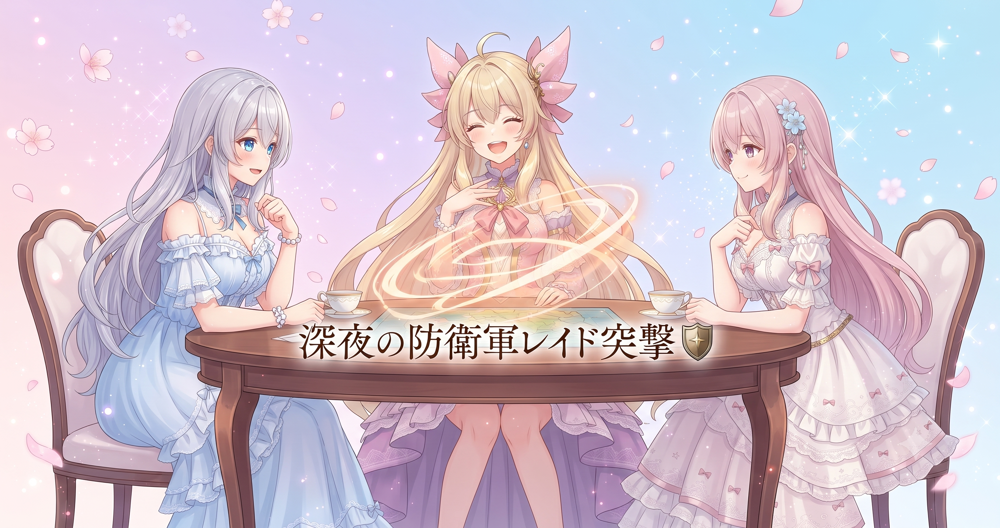
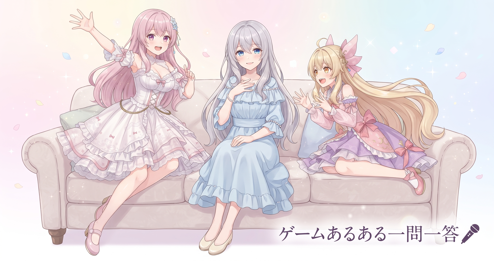

📌 3行まとめ
- 新バージョン解禁日、インストール作業を半分しかやっていなかったことが発覚して無事完了
- ソロサーバーでのデュラハン狩り中に「モンスターが消える」謎現象を体験し、リスナーさんと原因を考察
- 後半は常連リスナーさんと防衛軍レイドに突撃し、ストームカイザーの初陣も済ませた

ルピナス （笑顔）
今日も配信に来てくれたみんな、ありがとう！8時間あまりの長丁場、最後まで付き合ってもらえてほんとうれしかった。昨日はブログ周りの動作確認で「地味だけど大事な記録日」だったけど、今日はわりと波乱続きだったよ。

アイリス （びっくり）
波乱！？ゲームの中で何かあったの、お姉ちゃん？

ルピナス （にやり）
ゲームの中でも、始める前も、ね。配信開始直前に『あれ……新バージョン買ったはずなのに入れない』っていう事案が発生してたんだよ。

フィオナ （考え中）
……それは、詳しく聞かせていただけますか。
1. 👀 今日のやらかし

ドラクエ10の最新バージョン（Ver8）が解禁されたこの日。ルピナスはちゃんと購入済みだった——はずだった。いざ起動すると「入れない」という事態に直面。調べてみると、新バージョンを遊ぶには専用ソフトのダウンロードと登録コードの入力という2ステップの両方が必要なのに、片方しか終わっていなかった。購入だけ済んでいて、肝心のダウンロードが完了していないというシュールなスタートだった。

ルピナス （照れ）
えっとね……登録コードは入力したんだけど、ソフト本体のダウンロードをしていなかったんだよね。

アイリス （呆れ）
え！？鍵は手元にあるのに扉を取り寄せるのを忘れてたってこと？！

フィオナ （大笑い）
鍵だけが先に届いていた状態ですね。入れる扉がなかった。

ルピナス （呆れ）
そう！ちゃんと扉も取り寄せて、無事インストールはできたんだけど……今日中にVer8のストーリーを進める時間はなかったから、入れる状態になっただけで終わったんだよ。

アイリス （大笑い）
扉を開けたのに部屋に入らなかった人！！

フィオナ （ウインク）
一歩ずつ着実に、ですよ。それがお姉ちゃんらしいと思います。
📝 ポイント（初心者向け解説・技術メモ・まとめ）
- 新バージョンのゲームはソフトのダウンロードと登録コードの入力が別々のステップになっていることがある。片方だけで「終わった」と思うのは落とし穴なので、公式の手順を最後まで確認してから完了とみなす習慣を
- 配信メモ：複数ステップが絡む購入・インストール作業は、公式サイトの「はじめかた」ページを一行ずつ確認するとミスが減る
- ひとことまとめ：「買った」と「遊べる状態」の間には意外な段差がある
2. ソロサーバーのデュラハン消失事件を解明せよ

Ver8のストーリーは次回のお楽しみとして、今日のメインはソロ専用サーバー（他のプレイヤーとモンスターを取り合わないよう設計されたエリア）でのレベル上げだった。デュラハンというモンスターを倒し続けていたのだが、途中から「ポップしたと思ったら消える」という現象が頻発した。最初はバグを疑ったが、リスナーさんたちと原因を考察していった。

アイリス （衝撃）
デュラハン消えた！！ちゃんとそこにいたのに！！

ルピナス （考え中）
何回も起きてるんだよね。ポップしたと思ったら数秒で消えてく。最初バグかと思ったけど、なんか規則性がある気がして。

フィオナ （ふつう）
ソロサーバーとはいえ、同じサーバーに入っている方々が同じモンスターのシンボルを共有している可能性はあります。私がモンスターに触れたと思った瞬間、別の方がほんの少し早く触れていた——ということが起きていたのかもしれません。

アイリス （考え中）
消えてるんじゃなくて、消えるより先に誰かが取っていったってこと？

ルピナス （ドヤ顔）
そう。アプデ直後で同じエリアに人が集中してたのが原因っぽい。で、その流れで『経験値バフって戦闘中に切れても効果は続くの？』って疑問が出たから、1体あたりの経験値を実際に計算して確かめたんだよ。
アイリス （びっくり）
配信しながら計算してたの？！

ルピナス （ウインク）
実数から掛け算したら計算が合って『戦闘終了まで効果は続く』って確認できた。人から聞いた情報でも、できるだけ自分で確かめたい派なんだよね、私。
アイリス （大笑い）
お姉ちゃん、ゲームしながら研究者みたいなことやってる！！
ルピナス （ドヤ顔）
研究者気質は止められないのよ。
📝 ポイント（初心者向け解説・技術メモ・まとめ）
- アップデート直後の人気エリアは「ソロ向け設定でも他プレイヤーとの間接的な取り合いが起きる」可能性がある。数日置いてから行くか、時間帯を外すと安定しやすい（今後も確認したい）
- 配信メモ：「聞いた情報」を実数から逆算して検証する方法は、ゲームのバフ計算だけでなく作業ツールのパラメータ確認にも応用できる。実測値と計算が合致したとき初めて確認済みとみなす
- ひとことまとめ：混雑の正体が分かれば、対策も立てられる
3. ストームカイザーお試し切り

今回のアップデートで追加されたストームカイザーというジョブ（職業）。Ver8のストーリーを進んでいなくても試せる状態だったので、レベル上げの合間に片手剣や槍など複数の武器で実際に動かしてみた。風属性の攻撃が中心で素早さが高め、火力は出るが盾を持てない分だけ耐久は低め——そんな感触だった。アップデート直後で最適な武器の答えはまだ出ておらず、リスナーさんと考察しながら楽しんだ。

ルピナス （ふつう）
問題です。ストームカイザーで戦う時、武器は片手剣と槍のどちらが強いでしょうか。
アイリス （考え中）
うーん……『ストーム』って嵐じゃん。嵐といえば……傘！！
フィオナ （大笑い）
傘は確かに嵐の象徴ではありますが……片手剣は二刀流で攻撃力が高く、槍は固有技が2連撃になる可能性があるという話でしたよね、お姉ちゃん。
ルピナス （考え中）
どちらが強いかはまだ情報が揃っていなくて今日は感触を確かめた段階。結論は未検証案件。ちなみに今日リスナーさんに教えてもらうまでホマグレンザンってMP回復の技だって知らなかった。

フィオナ （照れ）
あの……私も今日初めて知りました。
アイリス （呆れ）
フィオナも！？あたしも知らなかったんだけど！！三姉妹そろって今日知ったって、もう誰も恥ずかしくない！！

フィオナ （笑顔）
アイリス、知らなかったことを堂々と言えるの、いいところですよ。

ルピナス （大笑い）
ほんとそれ。知らないって言える人が一番強い。
📝 ポイント（初心者向け解説・技術メモ・まとめ）
- 新ジョブはアップデート直後、情報が揃う前に触れるなら「自分で動かして感触をつかむ」のが最も正確。攻略情報は1週間後にまとまってくることが多い
- 配信メモ：ストームカイザーは風属性特化・素早さ高・耐久低の構成。後出し（相手の攻撃の隙に差し込む）が重要で、被弾を減らす立ち回りがカギになる模様（武器の最適解は未確認・検証中）
- ひとことまとめ：「正解が分からない」段階で遊ぶのが、実は一番楽しい
4. 夜の防衛軍、常連と突撃

配信後半、深夜にもかかわらず常連のリスナーさんたちが続々と集まり、8人でのレイドコンテンツ（防衛軍）に突入することになった。チャット越しの役割調整はひと苦労だったが、走り出してからは1ラウンドあたり1分前後という安定したペースでクリアし続けた。ストームカイザーで参加したルピナスは被弾してひやっとする場面もあったが最後まで完走し、長い配信の締めにふさわしい盛り上がりになった。
ルピナス （笑顔）
防衛軍、ほんとうに楽しかった。深夜なのに8人集まってくれて、しかも『アプデ当日に有給取りました』って人もいて。
アイリス （大笑い）
アプデ当日に有給！本気すぎる！！
ルピナス （ウインク）
みんなの動きを見ながら『プロだ……』ってなってた。私はストームカイザーで火力係のつもりで挑んだんだけど、一回被弾してめちゃくちゃ焦ったよ。盾ないから、被弾した瞬間に一気にやばくなるんだよね。嵐みたいに速くて、嵐みたいにあっという間に去っていく感じ。
フィオナ （大笑い）
お姉ちゃん、もしかして被弾した瞬間に傘が刺さっていましたか。
ルピナス （呆れ）
もう傘の話はいいから！……でも防衛軍はほんとうに楽しかった。またみんなと一緒にやりたいなって思える時間だった。
📝 ポイント（初心者向け解説・技術メモ・まとめ）
- 配信の締めをマルチプレイで盛り上げると「今日もいい時間だった」という余韻が残りやすい。人数を集めるなら早めに声をかけておくと動きやすい
- 今日の戦績：大人数レイドはパーティー編成の調整（誰が何役か）が最初の山場。チャット上で役割一覧を一度整理するだけで混乱が大幅に減る
- ひとことまとめ：準備のバタバタが大きいほど、走り出してからの達成感も大きい
5. 🎁 お楽しみコーナー：三姉妹へ一問一答

今日はゲームあるあるをテーマに、リスナーさんを想定した質問に三姉妹がテンポよく答えるコーナー！
ルピナス （笑顔）
一問目。『レベル上げが苦痛になってきたらどうしてますか？』

アイリス （ふつう）
あたし、苦痛より先に飽きる。飽きたら別のキャラでストーリー始めちゃう。
フィオナ （考え中）
私は『このレベルを超えたら行ける場所』を頭の中に思い浮かべます。ゴールの景色が見えると、苦行が少し修行に変わるんです。
ルピナス （ウインク）
私はリスナーさんとしゃべりながらやる。単調な作業こそ、会話が弾むんだよね。今日もそれで8時間あまり乗り切れた。

アイリス （笑顔）
二問目！『ゲームで知らないことを指摘されるのが怖いです』
ルピナス （大笑い）
大丈夫。私、今日ホマグレンザンがMP回復技だって初めて知ったし。
アイリス （大笑い）
三姉妹そろって今日知った！もう誰も怖くない！みんなのゲームあるある、コメントで聞かせてほしいな！
6. 💐 今日のまとめ
- 新バージョンのインストールは複数ステップを両方やって初めて完了。「買った」と「遊べる」は別物
- アプデ直後の人気エリアはソロ向け設定でも混雑の影響を受けやすい。時間帯と状況を見て動くのがよさそう
- 新ジョブはまず触れてみる。最適解はあとから出揃う——全員が探検者のアプデ直後が一番楽しい
みんなはゲームの新情報、自分で試す派？それとも攻略サイトが出そろってから動く派？
最新の配信情報は X（https://x.com/irisfionaAIBS）でも発信中だよ！
💬 コメント
お名前とコメントだけで送れるよ（承認されるとみんなに表示されます🌸）
コメントを読み込み中…